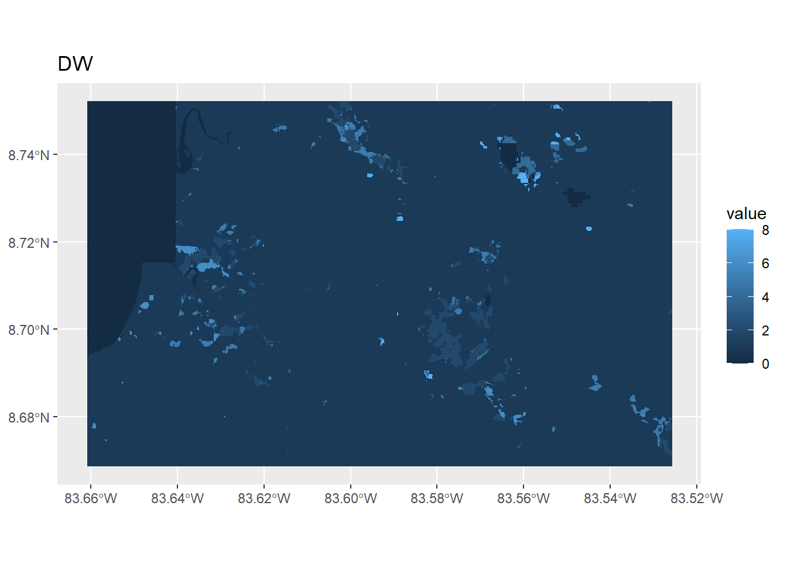
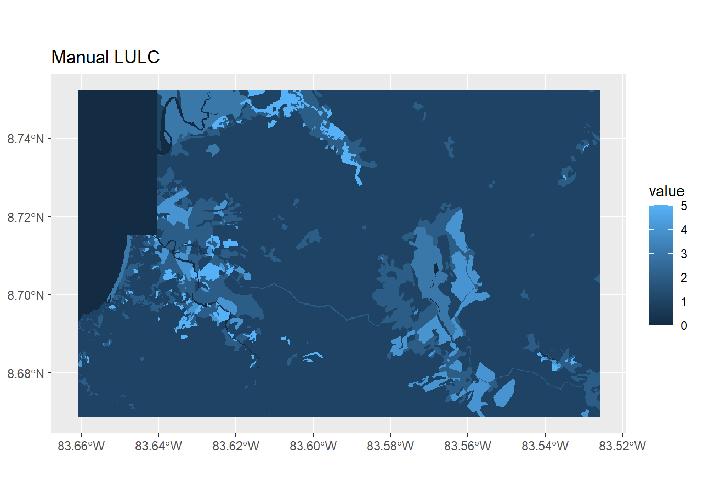
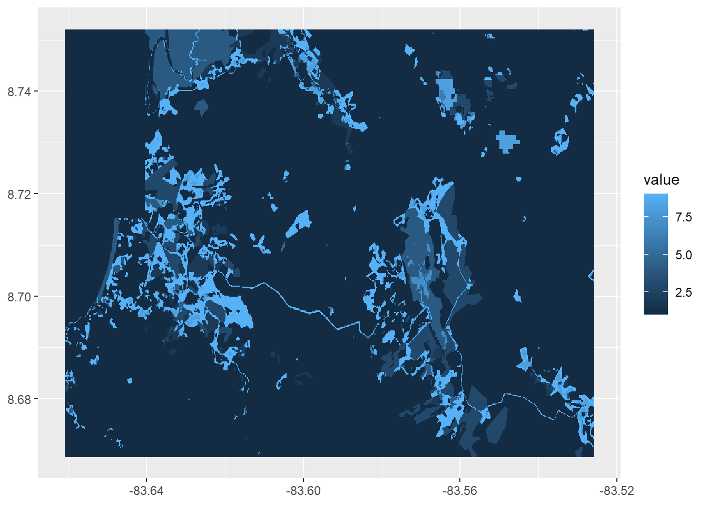
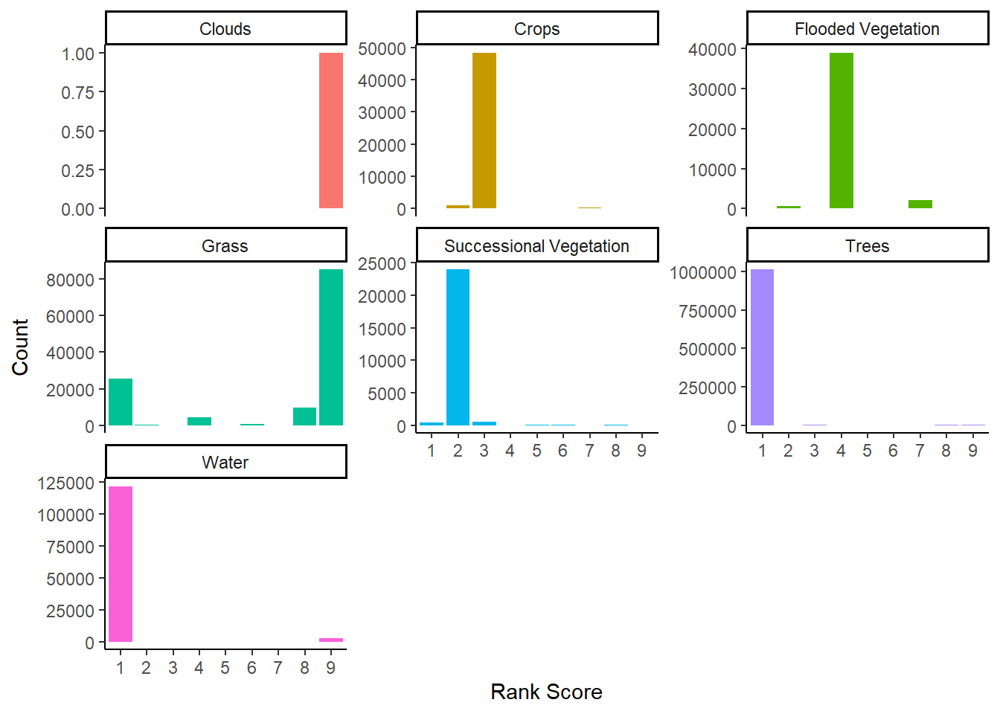

library(tidyverse)
library(terra)
library(tidyterra)DynamicWorld Test
Purpose
This is a preliminary comparison between a manual land use land cover (LULC) classification and data from the Dynamic World near real-time land cover classification product. The study area is the western Osa Peninsula, Costa Rica. The manual classification was made using data from SOURCE acquired between XXXX and XXXX. The Dynamic World data is based on composite imagery from SOURCE between XXXX and XXXX.
Loading packages and data
Load packages.
tidyversefor data manipulation and plottingterrafor raster data operationstidyerrato visualize raster data
Read in data and view summary information
ranksRaw<-read_csv("Fall24Exports/Manual_vs_DW_rankings.csv")
ranksRaw# A tibble: 9 × 8
Ranking Water Trees Grass `Flooded Vegetation` Crops Successional Vegetat…¹
<dbl> <chr> <chr> <chr> <chr> <chr> <chr>
1 1 DW_Water DW_T… DW_G… DW_Flooded Vegetati… DW_C… DW_Shrub & Scrub
2 2 DW_Snow… DW_S… DW_C… DW_Water DW_G… DW_Trees
3 3 DW_Bare… DW_C… DW_B… DW_Shrub & Scrub DW_T… DW_Grass
4 4 DW_Floo… DW_F… DW_B… DW_Trees DW_S… DW_Flooded Vegetation
5 5 DW_Buil… DW_G… DW_S… DW_Snow & Ice DW_F… DW_Crops
6 6 DW_Crops DW_B… DW_W… DW_Crops DW_B… DW_Built Area
7 7 DW_Grass DW_B… DW_F… DW_Grass DW_B… DW_Bare Ground
8 8 DW_Shru… DW_W… DW_S… DW_Bare Ground DW_W… DW_Water
9 9 DW_Trees DW_S… DW_T… DW_Built Area DW_S… DW_Snow & Ice
# ℹ abbreviated name: ¹`Successional Vegetation`
# ℹ 1 more variable: Clouds <chr>dwRaw<-rast("Fall24Exports/DW_RasterClip_2014_2017.tif")
dwRawclass : SpatRaster
dimensions : 931, 1505, 1 (nrow, ncol, nlyr)
resolution : 8.983153e-05, 8.983153e-05 (x, y)
extent : -83.661, -83.5258, 8.668653, 8.752286 (xmin, xmax, ymin, ymax)
coord. ref. : lon/lat WGS 84 (EPSG:4326)
source : DW_RasterClip_2014_2017.tif
name : DW_RasterClip_2014_2017
min value : 0
max value : 8 lulcRaw<-rast("Fall24Exports/LULC2014_17_PolygonToRaster.tif")
lulcRawclass : SpatRaster
dimensions : 928, 1501, 1 (nrow, ncol, nlyr)
resolution : 9e-05, 9e-05 (x, y)
extent : -83.66093, -83.52584, 8.668659, 8.752179 (xmin, xmax, ymin, ymax)
coord. ref. : lon/lat WGS 84 (EPSG:4326)
source : LULC2014_17_PolygonToRaster.tif
name : LULC2014_17_PolygonToRaster
min value : 0
max value : 9 The two rasters have different extents, resampling DW data to the LULC raster using nearest neighbor method.
dwResample<-resample(dwRaw,lulcRaw,method="near")Visualize raster data
ggplot() +
geom_spatraster(data=dwResample) +
labs(title="DW")
ggplot() +
geom_spatraster(data=lulcRaw) +
labs(title="Manual LULC")
Process ranking data
Pivot ranking data to create table with columns for ranking, LULC label, and DW label. Mutate to recode text landcover labels to numeric landcover labels.
ranksPivot<-pivot_longer(ranksRaw,
cols=Water:Clouds,
names_to = "LULC",
values_to = "DW") %>%
mutate(LULC = recode(LULC, Water = 0, Trees = 1, Grass = 2, `Flooded Vegetation` = 3, Crops = 4, `Successional Vegetation` = 5, Clouds = 9 )) %>%
mutate(DW = recode(DW, DW_Water = 0, DW_Trees = 1, DW_Grass = 2, `DW_Flooded Vegetation` = 3, DW_Crops = 4, `DW_Shrub & Scrub` = 5, `DW_Built Area` = 6, `DW_Bare Ground` = 7, `DW_Snow & Ice` = 8,DW_Clouds = 9 ))
ranksPivot# A tibble: 63 × 3
Ranking LULC DW
<dbl> <dbl> <dbl>
1 1 0 0
2 1 1 1
3 1 2 2
4 1 3 3
5 1 4 4
6 1 5 5
7 1 9 8
8 2 0 8
9 2 1 5
10 2 2 4
# ℹ 53 more rowsCompare values
Convert the raster data into tables of x, y, and numeric landcover label. Combine these into a single table of x, y, LULC label, and DW label. Join with ranking data.
dw2<-as.data.frame(dwResample,xy=TRUE)
lu2<-as.data.frame(lulcRaw,xy=TRUE)
comb<-cbind(dw2,lu2)
comb2<-comb[,c(1,2,3,6)]
comp<-left_join(comb2, ranksPivot, by = c("LULC2014_17_PolygonToRaster" = "LULC", "DW_RasterClip_2014_2017" = "DW"))
head(comp) x y DW_RasterClip_2014_2017 LULC2014_17_PolygonToRaster
1 -83.66089 8.752134 0 0
2 -83.66080 8.752134 0 0
3 -83.66071 8.752134 0 0
4 -83.66062 8.752134 0 0
5 -83.66053 8.752134 0 0
6 -83.66044 8.752134 0 0
Ranking
1 1
2 1
3 1
4 1
5 1
6 1Convert to tibble, rename columns, recode numeric landcover labels back to text landcover labels, select columns for
x
y
LULC label
DW label
Ranking
data<-as_tibble(comp) %>% rename(LULC=LULC2014_17_PolygonToRaster,DW=DW_RasterClip_2014_2017) %>%
mutate(LULC = recode(LULC, "0" = "Water", "1" = "Trees", "2" = "Grass", "3" = "Flooded Vegetation", "4" = "Crops", "5" = "Successional Vegetation", "9" = "Clouds" )) %>%
mutate(DW = recode(DW,"0" = "Water", "1" = "Trees", "2" = "Grass", "3" = "Flooded Vegetation", "4" = "Crops", "5" = "Shrub & Scrub", "6" = "Built Area", "7" = "Bare Ground", "8" = "Snow & Ice" , "9" = "Clouds")) %>% select(x,y,LULC,DW,Ranking)
data# A tibble: 1,392,928 × 5
x y LULC DW Ranking
<dbl> <dbl> <chr> <chr> <dbl>
1 -83.7 8.75 Water Water 1
2 -83.7 8.75 Water Water 1
3 -83.7 8.75 Water Water 1
4 -83.7 8.75 Water Water 1
5 -83.7 8.75 Water Water 1
6 -83.7 8.75 Water Water 1
7 -83.7 8.75 Water Water 1
8 -83.7 8.75 Water Water 1
9 -83.7 8.75 Water Water 1
10 -83.7 8.75 Water Water 1
# ℹ 1,392,918 more rowsMake a tibble by selecting x, y, and ranking. Convert to raster and visualize.
rankXY<-select(data,x,y,Ranking)
rankRaster<-rast(rankXY,type="xyz")
ggplot()+
geom_spatraster(data=rankRaster)
Exploring rankings by LULC land cover category. Mean score closer to 1 is a better match overall. Higher SD means greater range of rank values.
Trees, and water show up pretty well
Some grass is identified correctly, but much of it is misidentified
Flooded vegetation regularly misidentified
Successional vegetation and crops are frequently misidentified but to adjacent categories
ggplot(data,aes(x=as_factor(Ranking))) +
geom_bar(aes(fill=LULC),show.legend=FALSE) +
facet_wrap(vars(LULC),scales="free_y") +
theme_classic() +
labs(x="Rank Score",y="Count")
data %>%
group_by(LULC) %>%
summarize(n=n(),mean=mean(Ranking),sd=sd(Ranking)) %>%
arrange(desc(n))# A tibble: 7 × 4
LULC n mean sd
<chr> <int> <dbl> <dbl>
1 Trees 1026441 1.06 0.617
2 Grass 125449 7.10 3.24
3 Water 124604 1.19 1.22
4 Crops 49679 3.01 0.336
5 Flooded Vegetation 41764 4.12 0.708
6 Successional Vegetation 24990 2.03 0.394
7 Clouds 1 9 NA